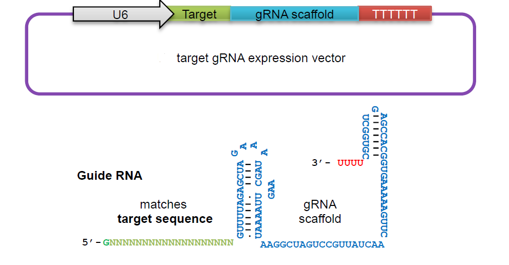
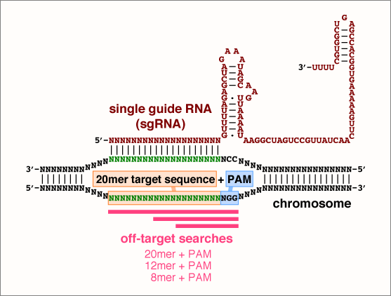
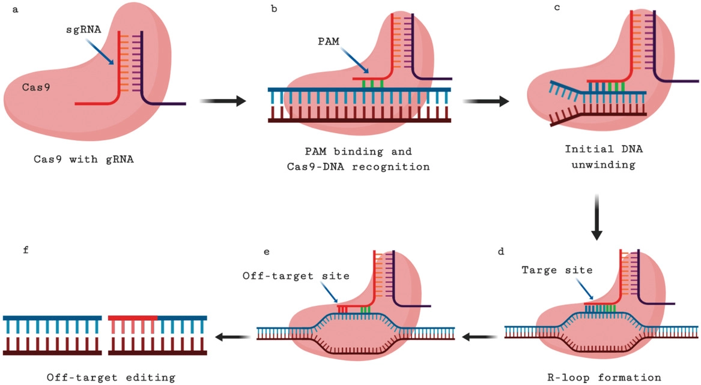

РАМ секвенцата претставува кратка секвенца, од 2-6 нуклеотиди, и e всушност местото каде што ензимот треба да го пресече ДНА хеликсот. Точната секвенца зависи од тоа кој протеин ќе го користиме. Така, на пример секвенцата за SpCas9 (Streptococcus Pyogenes Cas9) изгледа: 5’-NGG-3’, каде N е било која нуклеотидна база.
Водечката РНА е всушност кратка РНА секвенца која овозможува пронаоѓање на таргетот во ДНА секвенцата која сакаме да ја модифицираме, како и можност за спојување на Cas9 нуклеазата со самиот хеликс. Таа е составена од самата таргет секвенца која сакаме да ја модифицираме (~20 нуклеотиди) и исто така т.н. “костур“ (scaffold) РНА секвенца која служи за Cas9 спојувањето. Scaffold секвенцата е предефинирана, и зависи од типот на Cas9 кој ќе биде користен, во нашиот систем имаме предефинирана секвенца за Streptococcus pyogenes Cas9.
При дизајн на CRISPR таргет, во последнаите 3 колони ќе забележите информации за број на таргет места, зависно од големината на секвенцата (8mer, 12mer 20mer). Во овие случаеви, помал број значи попрецизна секвенца, бидејќи е поверојатно да се избегне Off-target модифицирање. Податоците обележани со зелена боја означуваат совршен погодок, имаат по еден погодок од 12mer+PAM и еден од 20mer+PAM.
Off-target е позиција каде што не е пожелно, но е возможно да се случи CRISPR модификација. Со ова може да се случи менување на функцијата на гени каде што не е пожелно, може да се случат и други ненамерни мутации, бришења или додавања на генетски материјал. За да се избегне ова, треба да се одбере високо специфична секвенца за обработка.
